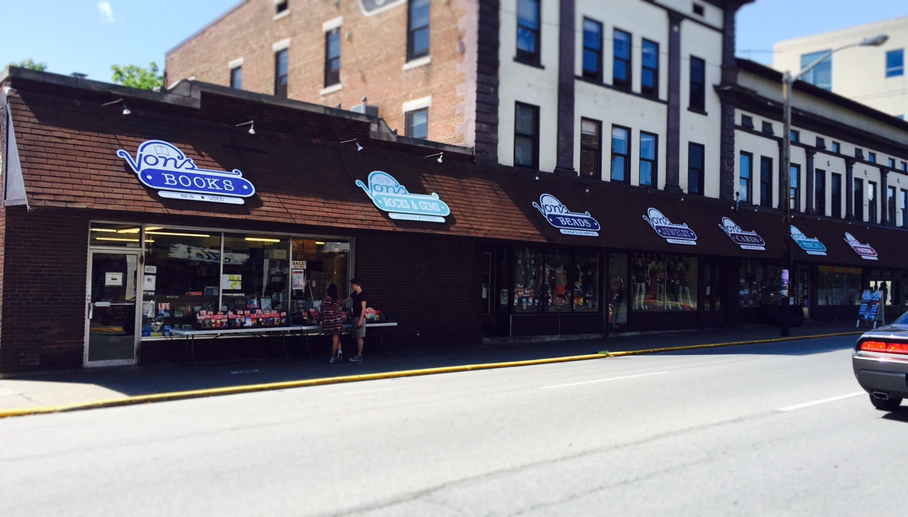
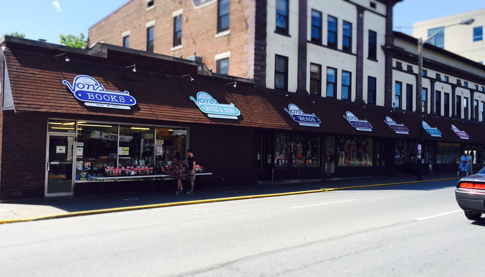

The Answer Was: State Street!
 

O
This is State Street, the border between Chauncey Square and Purdue University! There are lots of different buildings around where this photo was taken and along this street! Directly across this spot is the Phi Delta Theta Greek House, and along this street are places like Von’s Bookstores and Memorial Mall. If you’ve never walked on State St, you haven’t been in Purdue!
Next!